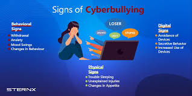
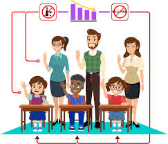

Understanding Cyberbullying
Cyberbullying refers to the intentional and repeated harm inflicted on individuals through digital means, such as social media, messaging platforms, online forums, and other forms of electronic communication. This behavior can take various forms, including:
- Harassment: Sending threatening or abusive messages repeatedly.
- Impersonation: Pretending to be someone else to damage their reputation or relationships.
- Exclusion: Intentionally excluding someone from online groups or activities.
- Doxxing: Publishing private or sensitive information about someone without their consent.
- Cyberstalking: Engaging in persistent and threatening behavior that creates fear in the targeted individual.
Signs and Symptoms of Cyberbullying
changes in mood, behavior, sleep, or appetite. suddenly wanting to stop using the computer or device. being nervous or jumpy when getting a message, text, or email. avoiding discussions about computer or phone activities.
The Impact of Cyberbullying
Cyberbullying can have severe emotional and psychological effects on victims, often leading to long-term consequences. Understanding these impacts is crucial for addressing the issue and providing appropriate support. Some of the key emotional and psychological impacts include: Anxiety and Depression: Victims of cyberbullying often experience heightened levels of anxiety and depression. The constant fear of being targeted or humiliated online can lead to feelings of helplessness, hopelessness, and sadness. Low Self-Esteem: Repeated negative interactions can damage a person's self-esteem. Victims may start to internalize the negative comments and believe that they are unworthy or inferior, which can affect their self-image and confidence. Isolation and Loneliness: Cyberbullying can lead to social withdrawal. Victims may distance themselves from friends and family to avoid further bullying or humiliation, leading to increased feelings of isolation and loneliness. Emotional Distress: Experiencing cyberbullying can cause significant emotional distress, leading to mood swings, irritability, and emotional instability. Victims may struggle to cope with their emotions, resulting in outbursts or withdrawal. Academic Challenges: The stress and anxiety associated with cyberbullying can interfere with a student's ability to focus on their studies. This may lead to declining academic performance, increased absenteeism, and a loss of interest in school-related activities. Post-Traumatic Stress Disorder (PTSD): In severe cases, victims may develop symptoms similar to those experienced by individuals with PTSD, including flashbacks, nightmares, and severe anxiety. This can hinder their ability to engage in everyday life. Suicidal Thoughts and Self-Harm: Tragically, some victims of cyberbullying may contemplate or attempt suicide as a way to escape their pain. It's crucial for educators, parents, and peers to recognize the signs of distress and provide support.
Download Research FindingsHow Schools Can Respond
Schools play a vital role in combating cyberbullying and creating a safe environment for all students. Here are several strategies that schools can implement to effectively respond to cyberbullying: Develop Clear Policies: Establish comprehensive anti-bullying policies that specifically address cyberbullying. Ensure these policies outline the definition of cyberbullying, procedures for reporting incidents, and consequences for offenders. Raise Awareness: Conduct regular awareness campaigns to educate students, teachers, and parents about the dangers of cyberbullying and the importance of digital citizenship. Use workshops, assemblies, and social media to spread awareness. Provide Training for Staff: Equip teachers and staff with the tools and knowledge to recognize the signs of cyberbullying. Training should cover how to intervene effectively and how to support victims and perpetrators. Encourage Open Communication: Create an environment where students feel safe to report incidents of cyberbullying. Encourage open dialogue through anonymous reporting systems, suggestion boxes, or regular check-ins with students.
Supporting Victims of Cyberbullying
Listen and Validate: Encourage victims to share their experiences without fear of judgment. Listening empathetically and validating their feelings can help them feel understood and less isolated. Encourage Open Communication: Create an environment where victims feel safe discussing their experiences. Encourage them to talk about their feelings and reassure them that they can share as much or as little as they are comfortable with. Avoid Blaming the Victim: Make it clear that cyberbullying is never the victim's fault. Avoid any language that might imply they are responsible for the bullying, and instead focus on offering support. Help Them Document Incidents: Encourage victims to keep records of bullying incidents, including screenshots of messages, URLs, and timestamps. This documentation can be helpful when reporting the behavior to authorities or school officials. Empower Them to Take Action: Discuss the options available to them for addressing the situation, including reporting the bullying to school officials or blocking the bully on social media. Empowering them to take action can help restore a sense of control.
Cyberbullying Prevention Strategies
Education and Awareness: Schools should implement programs that educate students about cyberbullying, its effects, and how to recognize it. Increasing awareness can empower students to stand against bullying behavior. Promote Digital Citizenship: Teach students about responsible online behavior, including respect for others, appropriate communication, and the potential consequences of their actions online. Digital citizenship programs can help students understand the impact of their online presence. Encourage Open Communication: Foster an environment where students feel safe discussing their online experiences. Encourage them to report any bullying incidents without fear of retaliation, ensuring they know that they will be taken seriously. Implement Clear Policies: Schools should have clear anti-bullying policies that include specific guidelines for addressing cyberbullying. These policies should be communicated to students, parents, and staff, outlining the consequences for engaging in cyberbullying behavior.